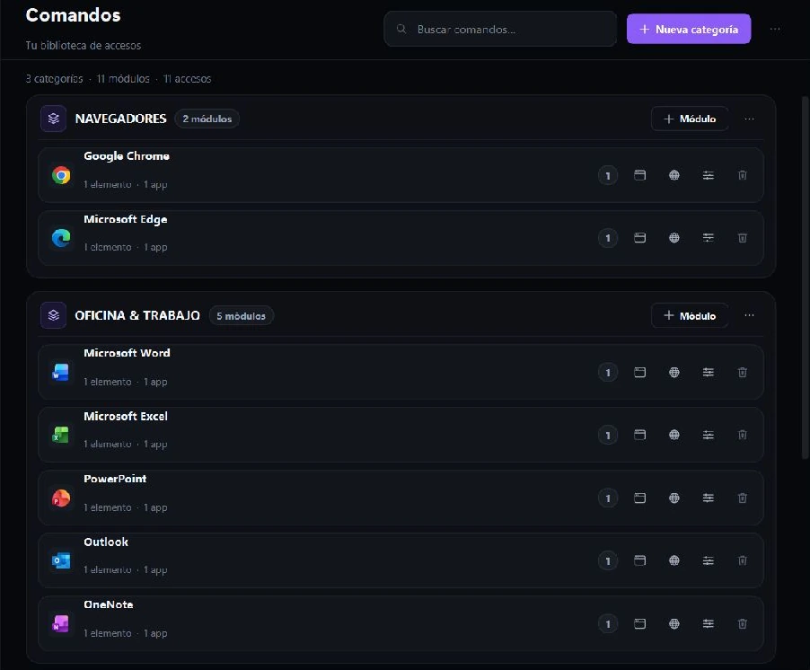

WINDOWS · ESCRITORIO
01
Encuentra rápido lo que ya tienes.
Clasifica aplicaciones y enlaces en categorías. Abre comandos y módulos desde la biblioteca de Aether Desktop.
Aether para Windows y Android
Organiza aplicaciones, enlaces y comandos en Windows. Con la misma cuenta, lleva RemotePad y la gestión de tus equipos a Android.
Windows 2.4.3 · Android 0.1.0+1

UN MISMO FLUJO
Aether conecta el escritorio que preparas en Windows con las herramientas que usas desde Android.
Clasifica aplicaciones y enlaces en categorías. Abre comandos y módulos desde la biblioteca de Aether Desktop.
Controla el puntero con RemotePad, consulta tus equipos y envía Wake-on-LAN cuando tu red lo permite.
Inicia sesión con la misma cuenta en ambos dispositivos.
ESTADO DEL PRODUCTO
Funciones y límites actuales, sin prometer cosas que todavía no están disponibles.
RemotePad, comandos, módulos, equipos guardados y conexión con la misma cuenta. Wake-on-LAN depende de la configuración del PC y de la red.
Transmite la pantalla del PC al teléfono desde Aether Mobile.
La transmisión se inicia en Android. El toque remoto requiere permiso de captura y Accesibilidad de Aether.
El acceso aparece bloqueado; el almacenamiento y la gestión de archivos aún no están implementados.
El toque remoto solo existe durante la proyección experimental de Android a Windows.
DESCARGAS OFICIALES
Instalador x64 · versión 2.4.3 · 115 MiB
AetherSetup-2.4.3-x64.exe · Windows puede mostrar una advertencia de editor no verificado.APK · versión 0.1.0+1 · 30 oct 2026 · 87.7 MiB
Aether-Android-2026-10-30.apk · release oficial.Ambos archivos pertenecen a la release Aether-2.4.3 del repositorio oficial.